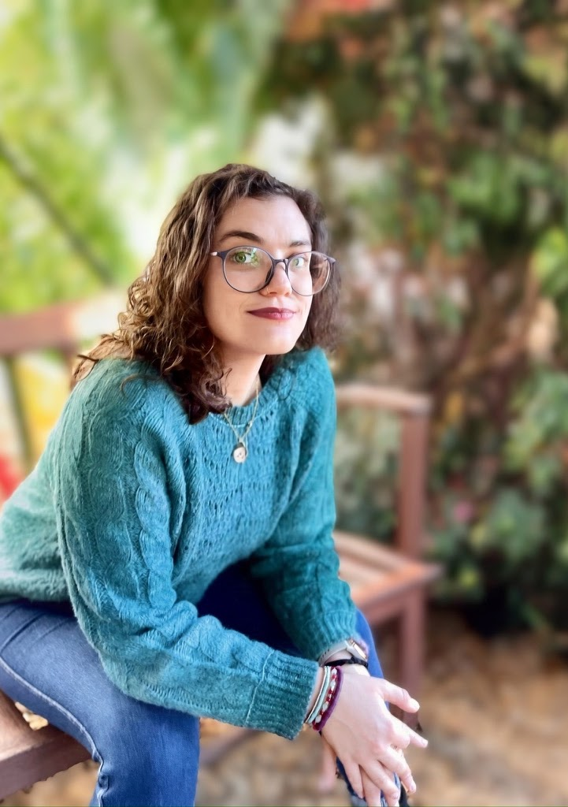

Meet Amanda

I have been working in maternal and child health for over a decade as an educator and advocate.
My path to becoming a doula came from my own experience. I had a "low risk" pregnancy and planned for an unmedicated, low-intervention birth. However, my baby and I experienced severe complications, and my plans went out the window. I worked for the hospital where I gave birth and I knew my OBGYN and midwife professionally. Even with all of my knowledge, I felt lost navigating the NICU, my own recovery, and my transition to parenthood.
My goal is to be the support for others that I wish I had.
Even when we feel fully prepared, pregnancy and birth can be complicated to navigate. Having a dedicated support person to talk through what you are experiencing ensures you have the information and space to make the best choices for your family.
What you can expect from me
I listen first. I won't tell you what your birth should look like, and I won't judge the choices you make. I'll help you understand your options, prepare your questions, and feel supported in whatever you decide.
My Experience
- Assistant Professor of Obstetrics & Gynecology
- Certified Birth Doula, Madriella Doula Network
- Certified Postpartum Doula, Madriella Doula Network
- Trauma-Informed Care training
- HIPAA Compliance for Doulas training
- PhD and MPH in Public Health, Epidemiology
- Returned Peace Corps Volunteer, Cambodia
- BA in Physical Education
Why "Lark" Doula?
The boring answer is Lark is the word I came up with when I mashed up my last name with my husband's.
It resonated with me because larks are songbirds, and my daughter, Melody, is why I do this work.
I hope it resonates with you because larks symbolize new beginnings and self-discovery, a journey I hope we can embark on together.
Outside of work
I'm an Ohio native and have lived in Milwaukee since 2021 with my husband, our daughter, Melody, and our cat, Leo.
You'll usually find me outdoors, trying a new gluten-free recipe, or in the middle of a creative project.